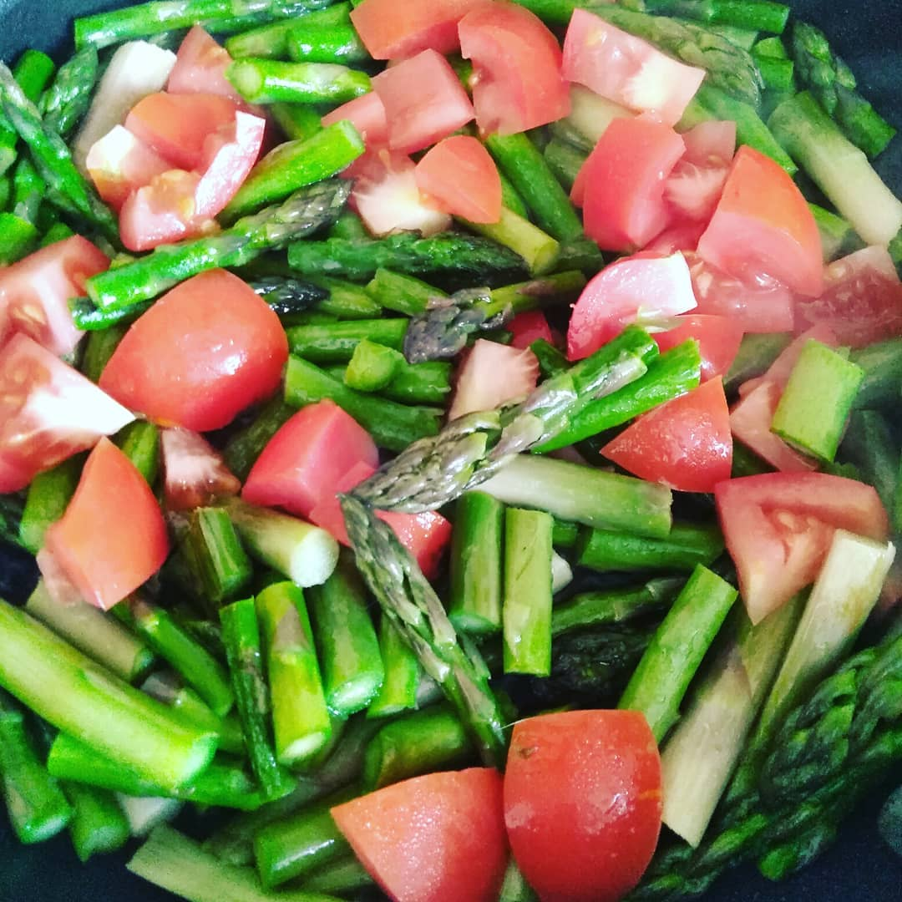

Zelenina podľa @spokojenaveganka — Normy Jedál
Může být něco lepšího než rajčata a chřest? NEEE 🍅
#vegan #vegetarian #veganfood #vegeterianfood #vegetables #zelenina #zeleninovejidlo #jimezdrave #veganlunch #veganlife #vege#chrest #rawvegan #spargel #tomatoes #rajcata #veganlife